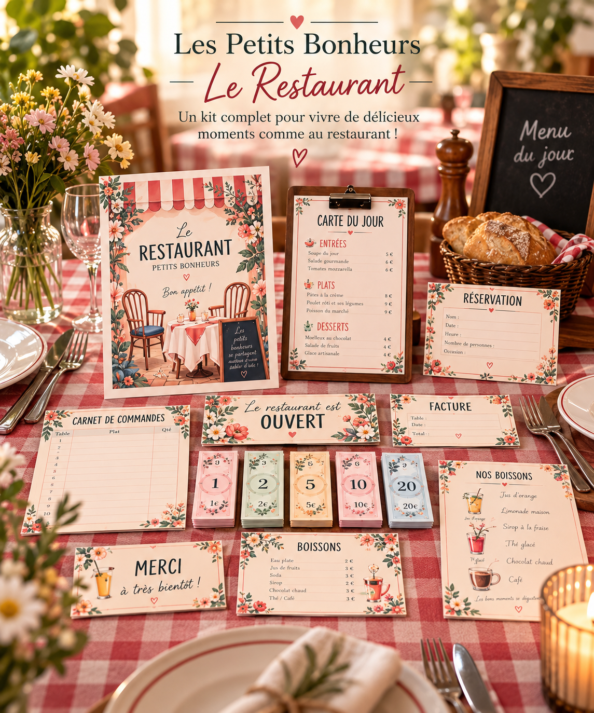

L’enseigne & la pancarte « Ouvert »
Pour annoncer que le restaurant accueille ses premiers invités.

Voir le visuel completLES JEUX « COMME LES GRANDS » · N° 01
On dresse la table, on accueille ses invités et on prend les commandes. Un restaurant à inventer ensemble, du premier bonjour à l’addition.
Choisissez votre façon de jouer
Guide d’utilisation inclus dans les deux formats
Paiement à venir. Vous pouvez déjà préparer votre panier.
LES SUPPORTS, ET CE QU’ON EN FAIT
Les mêmes supports de jeu
dans les deux formats.
Pour annoncer que le restaurant accueille ses premiers invités.
Pour choisir un plat, expliquer ce qui est proposé et composer son repas.
Pour préparer l’arrivée des clients et le nombre de places.
Pour noter, dessiner ou dicter ce qu’il faudra servir.
Pour compter selon ses acquis, sans obligation de calculer.
Pour dire au revoir et terminer le service.
Une table, de la dînette, un crayon et des aliments imaginaires. Les peluches sont aussi d’excellents clients.
UNE PARTIE, PAS À PAS
Une table devient le restaurant. Placez les menus côté clients et le carnet de commandes côté service. Choisissez les rôles : qui accueille, qui cuisine, qui vient déjeuner ? Les rôles tournent à chaque nouveau service.
Le client donne son prénom et le nombre de convives. « Nous sommes trois. Combien d’assiettes faut-il ? » On prépare les places ensemble.
Le serveur écoute, dessine ou note la commande. « Tu as choisi une soupe et un jus, c’est bien ça ? » Un dessin vaut déjà une prise de notes.
La cuisine prépare les plats imaginaires. Le service associe chaque commande au bon client. Un plat manque ? On cherche une autre proposition.
On donne un billet, compose une somme ou calcule l’addition selon ses acquis. On remercie ses invités, puis les clients deviennent restaurateurs.
REGARDER CE QUI SE PASSE DANS LE JEU
Pas de bonne réponse à réciter. L’enfant essaie, échange, recommence. L’adulte accompagne sans écrire l’histoire à sa place.
Formuler une demande, poser une question et redire ce que l’on a entendu.
Associer une place à une personne, préparer trois assiettes, vérifier qu’il ne manque rien.
Comprendre qu’une liste ou un dessin permet de retrouver une commande.
Transmettre une information à la cuisine et chercher ensemble une solution.
LE MÊME KIT, DES HISTOIRES QUI ÉVOLUENT
Ces âges sont des repères, pas des prérequis. On peut montrer, dessiner ou dicter : savoir lire n’est pas nécessaire pour commencer.
Deux choix de plats, une commande à la fois. Un adulte peut être client. Ni lecture ni addition nécessaires.
Plusieurs convives, commandes dessinées et petites quantités. Commencez avec les billets de 1.
Inventer un menu, respecter un budget et rendre la monnaie si les acquis le permettent.
À LA MAISON
Ouvrez le restaurant des peluches ou invitez un adulte à un dîner imaginaire. Chaque client peut avoir un plat préféré à retenir.
EN CLASSE OU EN ATELIER
Installez un petit groupe et faites tourner les rôles. Choisissez une seule cible à observer : redire une commande sans rien oublier, par exemple. Le groupe prépare l’espace pour les suivants.
Préparer une séanceLA PETITE QUESTION APRÈS LE JEU« Qu’est-ce qui t’a aidé à ne pas oublier la commande ? »
IMPRIMER · DÉCOUPER · REJOUER
UNE AUTRE PORTE À POUSSER